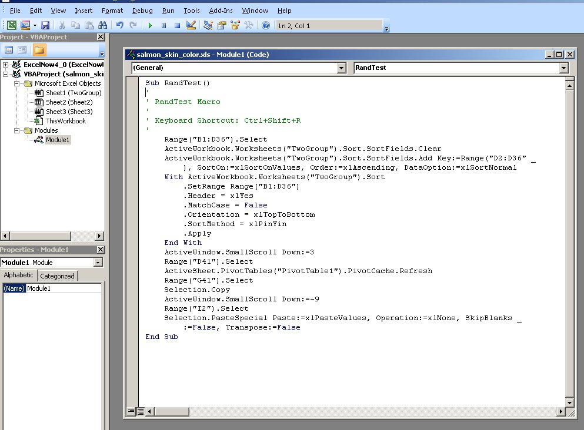

Today we will modify the macro you recorded last time to add the loop, and to record the results needed to complete our randomization test.
Additionally, we'll try a couple of different variations on the basic model to encourage you to understand how the program is working.
Program 1 - the basic randomization test
Step 1 - modify the macro to add a loop.
Open the file you worked with last time.
Click on "Macros", "View macros", select "RandTest", and click on "Edit". You should see something very similar to this. The commands in the main window are the visual basic commands that produce the actions you took while the macro recorder was running. The entire macro starts with a Sub keyword, followed by the name of the macro we chose (RandTest), with parentheses indicating that we're defining a function. Sub is short for "subroutine", which is Basic terminology for a part of a program. The end of the macro is designated with the keywords "End Sub". The actual commands that are executed fall between the Sub and End Sub lines.
The following explanation refers to the screen shot of my example, and your line numbers may be slightly different if you did anything different (such as scrolling) that I didn't do while the macro recorder was running.
- You first selected B1 through D36 (line 7)
- You then sorted the data (lines 8 through 18)
- You selected the pivot table (line 20), then refreshed it (line 21)
- You selected the t-value (line 22), copied it (line 23), then selected cell I2 and paste-specialed the value (line 26 and 27).
All that's needed now is to add a loop that will execute these instructions 1,000 times, and to record the result of each iteration. Adding the loop involves enclosing the entire recorded macro inside of a For...next statement.
Before the "Range("B1:D36").Select" statement,type:
For i = 1 to 1000
and then after the last command, but before the End Sub line, write:
Next i
Put the For and Next at the same indent level so you can easily see that they match.
This loop first sets the variable i equal to the value of 1, then moves through the Macro-recorded commands one at a time. When it gets to the "Next i" statement, it sets i equal to 2, then runs through the commands again. It continues to loop through the commands, increasing i by one each time, until it reaches 1000. After executing the loop for the 1000'th time, it leaves the loop and executes the statement following Next i - since there isn't a command after Next i, the program ends.
You can click on the save icon to save your changes.
Step 2 - run the macro.
At this point, you have a macro with a working loop, so go ahead and try it out - switch back to the worksheet and type ctrl+shift+R.
You'll see that Excel starts running through the commands repeatedly - it shuffles the data by sorting on the random numbers, which causes the statistics to all recalculate. The only problem is that each time it runs it copies the new t-value and pastes it into cell I2, which is not what we want - instead, we want to move down one row each time and record the new t-value without over-writing the old ones. Which means we need to edit the macro some more.
Step 3 - modify the macro to record the t-value each time through the loop in a different cell.
We nearly have what we need, but we need to modify the "Range("I2").Select" statement so that it will move down one row for each run through the loop. This turns out to be very simple, once you understand the syntax.
First, you should recognize that the value of i increases by one each time through the loop, and we can use the value of i in our commands to identify a new row with each iteration. So, for example, if we want to select the second row of column I for the first run through the loop, we could ask for row i+1. The second run through the loop i will be equal to 2, and i+1 will be equal to 3. If we base our select statement on row i+1, we will select a new row each time through the loop for the t-values we are recording.
Since we are using the column/row format to identify our cells (i.e. "I2" for row 2 of column I), we need a way to concatenate the column letter (I, which stays the same each time through the loop) with the row number (i+1, which changes as i increases) in the Range().Select statement. This can be done using the ampersand symbol (&). Modify the Range.Select statement from:
Range("I2").Select
to:
Range("I" & i+1).Select
Step 4 - "debug" the program.
Debugging means finding errors in the program and fixing them, but with any luck you don't have any errors. Even if you don't, though, you can use the debugging tools to "step" through the program, meaning that you can execute one instruction at a time and see how the spreadsheet changes with each step.
Arrange the windows so that you can see both the spreadsheet and the macro code window at the same time, then select the code window to make it active. Now, hit the F8 key repeatedly, and watch how each row is highlighted one at a time. As the highlighting moves off of a row it is executed, and you can see the result of the command in the spreadsheet. Do this for several runs through the loop to get a feeling for how the program you've written is working.
When you are done stepping through the code, you can hit the ESC key, or click on the "Stop" button (the little square to the right of the green "run" triangle at the top of the code window).
Also, it would be a good idea to save your work, now that everything is working. You can either use File → Save in the code window's menu bar, or click on the little antique floppy disk icon to save the sheet, along with your macro.
Step 5 - the need for speed.
If you ran the macro at this point it would be pretty slow. One of the
things you can do to speed up a macro is to turn off the screen
redrawing. Redrawing
the screen is very slow compared to actually executing the commands in
the program, so once you know it's working you don't need to watch each step execute anymore. To shut off screen redrawing, add a line before your For i
= 1 to 1000 command that reads:
Application.ScreenUpdating = False
At the end of the program you want to restore any changes to Excel's settings to their original values so that it continues to work as you expect it to, so after Next i and before End Sub add the line:
Application.ScreenUpdating = True
If you have the time and you want to see Excel madly running through
the commands you return to screen redrawing any time by putting a single
quote in front of these to commands to disable them - single quotes are
used to embed "comments" in the code, which are notes that programmers
use to document what the program is doing, but are ignored when the
computer runs the program. The macro editor changes the color of
comments to green to make it easier to see which lines are meant to be
notes, and which are lines of code to be run.
Advanced tip: cleaning up the code
This step is optional, as it has a smaller effect on execution time than
turning off screen updating, and if done wrong it can screw up your
macro. But, if you are making good progress, and want to speed up your
code even more, read on.
The other thing that helps speed up a program is to remove any commands
that aren't needed. If you look through your code, you may see some
commands such as "ActiveWindow.ScrollColumn = 2", or
"ActiveWindow.LargeScroll ToRight:=-1". These were all recorded because
you needed to scroll the window to select the cells to copy or paste,
but Excel doesn't need them to execute the macro. You can delete any of
these commands you find.
Excel also doesn't need to select a cell within the pivot table before refreshing it - so, if you have a "Range("D41").Select" before the "ActiveSheet.PivotTables("PivotTable1").PivotCache.Refresh" statement you can delete the Range.Select line.
The same is true for the sort - Excel is told which range to sort
within the sort command, so the original "Range(B1:D36").Select" isn't
needed, and you can delete it.
Copying and pasting is also slow, and we can instead just assign the
value of cell G41 to the output cell in column I like so:
Range("I" & i + ) = Range("G41").Value
This line takes the place of Range("G41").Select, Selection.Copy, and Selection.PasteSpecial, so you can delete all of those lines.
Step 5 - run the macro to conduct the test.
Now that you know your code is working, it's time to run it. Switch to the spreadsheet, and hit CTRL+SHIFT+R.
Since screen re-drawing is turned off you won't see anything happening, but as long as you have a busy cursor let it run (it took about 20 seconds when I tested it with all of the speedup changes in step 11 applied).
When it's done you'll see all 1000 of the t-values for your randomly generated groups in column I. Now we need to know how many of those were bigger than our observed t-value of 10.3.
Step 6 - count the random t-values that exceed the observed t-values, and generate a p-value.
We are now going to compare each randomly generated t-value to the observed t-value. The p-value tells us the probability of getting a t-value as large as we observed by chance, and thus we want to count up how often the random differences were as large or larger than the observed.
We should consider this a two-tailed test, meaning that we should consider the possibility that kokanee would be less red than the sockeye salmon as well as the expected result that they're more red. So, when we do the comparison we should base it on absolute values, so that a big randomly-generated difference in color in either direction will be included in the p-value.
Enter the label "Number exceeding observed" in cell A49. We can take advantage of the fact that "TRUE" is counted as a 1 by a computer, and "FALSE" is counted as a 0 to get this value. In cell A50 type:
=sum(abs(i2:i1001)>abs(A47))
and then make it an array formula with CTRL+SHIFT+ENTER. This will take
the absolute value of each t-value and test whether it is greater than
the absolute value of the observed t in cell A47. Each time the random t
is bigger than the observed t this comparison will return TRUE (the
boolean data value, not the word "true"). Excel treats a boolean TRUE as
having a value of 1, so the sum of these TRUE's is equal to the number
of times the random t's exceeded the observed t.
Copy and paste-special the value so it doesn't change when you do the second and third program.
Now, you can calculate the p-value as:
(# that exceeded observed + 1)/(total iterations + 1)
Enter a spreadsheet formula that does this calculation in cell A53 - label this "p-value" in cell A52. If p is less than 0.05, then you reject the null hypothesis of no difference in color, and instead conclude that kokanee are redder than sockeye (based on their mean color scores).
Second program:
Select all the t-values from the first run and delete them.
Start a new macro, but this time use 2000 random shuffles instead of 1000. Calculate a p-value for this 2000 iteration version of the test, and record it in the worksheet. Remember to change the count of number of t's exceeding the observed t to reflect the larger number of iterations. Record the number exceeding and p-value for this version next to the values for the original test (cells B49 and B52, respectively).
In cell B55, tell me how this increase affected the test. What's the smallest p-value possible with 1000 shuffles, and what is it with 2000 shuffles?
Third program:
This time you will check whether it matters if you randomly shuffle the species labels instead of the measured data.
Select all the t-values and delete them, so that this calculation will
be based on the new program.
Put the data back in the original sort order - remember, don't include the species in this sort! Just sort the skin colors relative to the original order column.
Then, copy the salmon species column and paste it next to the randomizer column (column E). Label it "Random species" in cell E1.
If you select a cell in the pivot table and then switch to the "Analyze" tab, you can click on "Change Data Source", and extend the table to include this second species column. If you take out "species" as the row labels and put in "Random species", the t-value calculation should now be based on the random groupings that you'll produce in column E.
Start a new macro, but this time randomly sort "Random species" instead of "skin color", using 1000 iterations. Do the necessary calculations to get a p-value and record it in the sheet, next to the other two versions, in column C.
In a cell below the p-value (C55), note any differences in the results - in cell B56 tell me whether randomizing the data or randomize the species names gives you different results.
Assignment
That's it! Upload your completed file to the class web site.